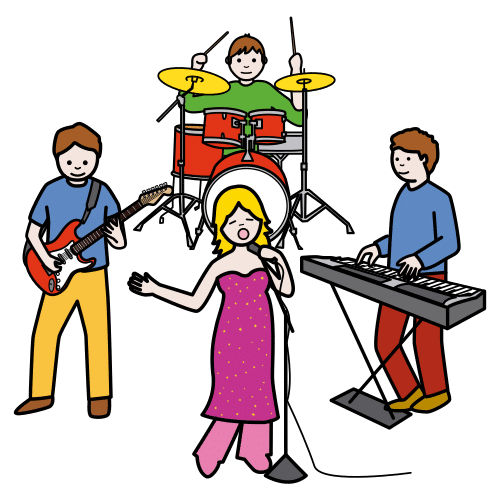
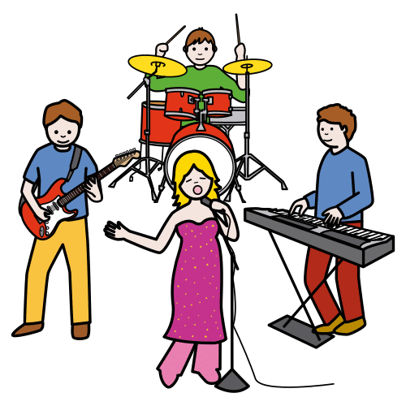

Some classmates in your team might have felt nervous or scared.
Maybe someone helped them feel better.
Others might have felt angry because they didn’t know what to do.
When we work in a team, we can feel different things.
If we know our feelings, we can do the work better.
Here are some tips for the next team activity:
1. Think about how you feel.
2. Ask your teammates how they feel.
3. Talk to your team. Decide what to do to feel better and finish the work.
¿Cómo se sintieron tus compañeros y compañeras?
Algunos compañeros de tu equipo podrían haberse sentido nerviosos o asustados.
Tal vez alguien les ayudó a sentirse mejor.
Otros podrían haberse sentido enfadados porque no sabían qué hacer.
Cuando trabajamos en equipo, podemos sentir cosas diferentes.
Si conocemos nuestros sentimientos, podemos hacer el trabajo mejor.
Aquí tienes algunos consejos para la próxima actividad en equipo:
1. Piensa en cómo te sientes.
2. Pregunta a tus compañeros cómo se sienten.
3. Habla con tu equipo. Decidid qué hacer para sentiros mejor y terminar el trabajo.


.png "Saber") Show what you know
Show what you know.png "Trabajo en equipo") You are going to work in a group.
You are going to work in a group. Your team is a group of three or four.
Your team is a group of three or four..png "Escribir") Write about your favorite band or singer.
Write about your favorite band or singer.

.png "Elegir")
 Choose one singer or one band.
Choose one singer or one band..png "Write") Write the name
Write the name Write your favorite song.
Write your favorite song..png "Present") Present your work with a song, dance, video or photo.
Present your work with a song, dance, video or photo.